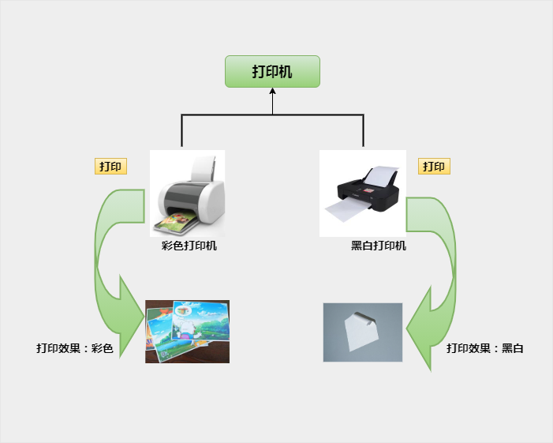

Java ポリモーフィズム
ポリモーフィズムとは、同じ動作が複数の異なる表現形式や形態を持つ能力のことです。
ポリモーフィズムとは、同じインターフェースでも、異なるインスタンスを使用することで異なる操作を実行することです。図の通りです：

ポリモーフィズムは、オブジェクトの多様な表現形式の現れです。
現実世界では、例えばF1キーを押すという動作を考えます：
- 現在Flash画面であれば、ポップアップするのはAS 3のヘルプドキュメントです；
- Wordであれば、ポップアップするのはWordヘルプです；
- Windowsであれば、ポップアップするのはWindowsヘルプとサポートです。
同じイベントが異なるオブジェクトで発生すると、異なる結果が生じます。
ポリモーフィズムの利点
- 1. 型間の結合関係を排除する
- 2. 置換可能性
- 3. 拡張可能性
- 4. インターフェース性
- 5. 柔軟性
- 6. 簡素化
ポリモーフィズムが存在するための3つの必要条件
- 継承
- オーバーライド
- 親クラスの参照が子クラスのオブジェクトを指すこと：Parent p = new Child();

void draw() {}
}
class Circle extends Shape {
void draw() {
System.out.println("Circle.draw()");
}
}
class Square extends Shape {
void draw() {
System.out.println("Square.draw()");
}
}
class Triangle extends Shape {
void draw() {
System.out.println("Triangle.draw()");
}
}
ポリモーフィズム方式でメソッドを呼び出す場合、最初に親クラスにそのメソッドがあるかどうかを確認します。なければコンパイルエラーになります。あれば、子クラスの同名メソッドを呼び出します。
ポリモーフィズムの利点：プログラムの拡張性を高め、すべてのクラスのオブジェクトを汎用的に処理できます。
以下はポリモーフィズムの実例のデモです。詳細はコメントを参照してください：
Test.java ファイルコード：
上記のプログラムを実行すると、出力結果は次のようになります：
吃鱼 抓老鼠 吃骨头 看家 吃鱼 抓老鼠
仮想関数
仮想関数はポリモーフィズムのために存在します。
Javaには実際には仮想関数の概念はありません。Javaの普通の関数はC++の仮想関数に相当し、動的束縛はJavaのデフォルトの動作です。Javaで特定の関数に仮想関数の特性を持たせたくない場合は、finalキーワードを付けて非仮想関数にすることができます。
オーバーライド
Javaでは、クラスを設計する際に、オーバーライドされたメソッドの動作がポリモーフィズムにどのように影響するかを説明します。
メソッドのオーバーライドについてはすでに説明しました。つまり、子クラスは親クラスのメソッドをオーバーライドできます。
子クラスのオブジェクトがオーバーライドされたメソッドを呼び出すとき、呼び出されるのは子クラスのメソッドであり、親クラスでオーバーライドされたメソッドではありません。
親クラスでオーバーライドされたメソッドを呼び出すには、キーワードを使用する必要がありますsuper。
Employee.java ファイルコード：
次のクラスがEmployeeクラスを継承すると仮定します：
Salary.java ファイルコード：
次に以下のコードを注意深く読み、その出力結果を考えてみましょう：
VirtualDemo.java ファイルコード：
上記の例をコンパイルして実行した結果は次のとおりです：
Employee 构造函数 Employee 构造函数 使用 Salary 的引用调用 mailCheck -- Salary 类的 mailCheck 方法 邮寄支票给：员工 A ，工资为：3600.0 使用 Employee 的引用调用 mailCheck-- Salary 类的 mailCheck 方法 邮寄支票给：员工 B ，工资为：2400.0
例の解析
-
この例では、2つのSalaryオブジェクトをインスタンス化しています。1つはSalary参照sを使用し、もう1つはEmployee参照eを使用しています。
-
s.mailCheck()を呼び出すと、コンパイラはコンパイル時にSalaryクラスでmailCheck()を見つけ、実行時にJVMがSalaryクラスのmailCheck()を呼び出します。
-
eはEmployeeの参照ですが、参照eが最終的に実行するのはSalaryクラスのmailCheck()メソッドです。
-
コンパイル時には、コンパイラはEmployeeクラスのmailCheck()メソッドを使用してこの文を検証しますが、実行時にはJava仮想マシン(JVM)がSalaryクラスのmailCheck()メソッドを呼び出します。
上記のプロセス全体は仮想メソッド呼び出しと呼ばれ、そのメソッドは仮想メソッドと呼ばれます。
Javaのすべてのメソッドはこのように動作できます。したがって、オーバーライドされたメソッドは、コンパイル時にソースコード内の参照変数がどのデータ型であっても、実行時に呼び出すことができます。
ポリモーフィズムの実装方法
方法1：オーバーライド：
この内容は前の章で詳しく説明したので、ここでは述べません。詳細は以下を参照してください：Java オーバーライド(Override)とオーバーロード(Overload)。方法2：インターフェース
1. 身近なインターフェースの代表例はコンセントです。例えば、3極プラグは3口コンセントに差し込めます。これは各国ごとに規定されたインターフェースのルールがあるためです。海外では使えない場合がありますが、それは海外で独自に定義されたインターフェースの種類だからです。
2. Javaのインターフェースは、生活の中のインターフェースに似ており、いくつかのメソッドの特徴の集合ですが、メソッドの実装はありません。詳細はJavaインターフェースこの章の内容を参照してください。
方法3：抽象クラスと抽象メソッド
詳細はJava抽象クラスの章を参照してください。
その他の拡張
小丫小石头
116***1009@qq.com
参考URL
ポリモーフィズムについて、以下のようにまとめられます：
一、親クラス型の参照を使用して子クラスのオブジェクトを指す；
二、その参照は親クラスで定義されたメソッドと変数のみ呼び出せる；
三、子クラスが親クラスのメソッドをオーバーライドした場合、そのメソッドを呼び出すと、子クラスのメソッドが呼び出されます；（動的結合、動的呼び出し）
四、変数はオーバーライド（上書き）できません。「オーバーライド」の概念はメソッドにのみ適用されます。子クラスで親クラスの変数を「オーバーライド」すると、コンパイル時にエラーになります。
小丫小石头
116***1009@qq.com
参考URL
九刃
528***187@qq.com
クラスの属性変数はオーバーライド（上書き）できます
class Animal{ public int age; public void move(){ System.out.println("动物可以移动"); } } class Dog extends Animal{ public double age; public void move(){ age = 10.00; System.out.println("狗可以跑和走"); } public void bark(){ System.out.println("狗可以吠叫"); } } class Cat extends Animal{ public void move(){ super.age = 3; System.out.println("猫可以跳"); } } public class TestOverride{ public static void main(String args[]){ Animal a = new Animal(); // Animal 对象 Animal b = new Dog(); // Dog 对象 Dog c = new Dog(); Cat d = new Cat(); a.move();// 执行 Animal 类的方法 b.move();//执行 Dog 类的方法 c.move();//执行 Dog 类的方法 d.move();//执行 Cat 类的方法 Object aValue = a.age; Object bValue = b.age; Object cValue = c.age; System.out.println("The type of "+a.age+" is "+(aValue instanceof Double ? "double" : (aValue instanceof Integer ? "int" : ""))); System.out.println("The type of "+b.age+" is "+(bValue instanceof Double ? "double" : (bValue instanceof Integer ? "int" : ""))); System.out.println("The type of "+c.age+" is "+(cValue instanceof Double ? "double" : (cValue instanceof Integer ? "int" : "")));// 覆盖age属性 System.out.println("The age of cat is "+d.age); } }コンパイル値：
九刃
528***187@qq.com
xiaohau7988
107***2774@qq.com
ポリモーフィズム参照時に、子クラスのオブジェクトを構築する際のコンストラクタの呼び出し順序
1、まずスーパークラスのコンストラクタを呼び出します。多重スーパークラスの場合、最初に最も遠いスーパークラスのメソッドを呼び出します；
2、次に現在の子クラスのコンストラクタを実行します；
呼び出し時にはメソッド呼び出しを慎重に処理する必要があります
xiaohau7988
107***2774@qq.com
matthew
656***122@qq.com
参考URL
ポリモーフィズムの分類
ポリモーフィズムは一般的に2種類に分けられます：オーバーライド式ポリモーフィズムとオーバーロード式ポリモーフィズムです。
オーバーロード式ポリモーフィズム、コンパイル時ポリモーフィズムとも呼ばれます。つまり、このポリモーフィズムはコンパイル時にすでに決定されています。オーバーロードは誰もが知っていると思いますが、メソッド名が同じでパラメータリストが異なる一連のメソッドがオーバーロードです。このようなオーバーロードされたメソッドを呼び出す際には、異なるパラメータを渡すことで最終的に異なる結果が得られます。
オーバーライド式ポリモーフィズム、実行時ポリモーフィズムとも呼ばれます。このポリモーフィズムは動的バインディング（dynamic binding）技術によって実現され、実行中に参照されているオブジェクトの実際の型を判断し、その実際の型に応じて対応するメソッドを呼び出すことを指します。つまり、プログラムが実行されて初めて、どのサブクラスのメソッドが呼び出されるのかがわかります。 このポリモーフィズムは、関数のオーバーライドとアップキャストによって実現されます。上記のコードの例は、完全なオーバーライド式ポリモーフィズムです。これから説明するすべてのポリモーフィズムはオーバーライド式ポリモーフィズムです。なぜなら、それがオブジェクト指向プログラミングにおける真のポリモーフィズムだからです。
詳細は以下を参照：Javaにおけるポリモーフィズム
matthew
656***122@qq.com
参考URL
我是小萌新
239***9370@qq.com
親クラスの属性変数（例えば変数 int a）は継承され、サブクラスにもその変数（super.int a、継承された変数）が同時に継承されます。サブクラスでは、同じ名前の変数（同じ型でもよい）を再度宣言することもできます（double a、自分で宣言した同名の変数）。両者は同時に存在できます。出力時には、オブジェクトの参照名に基づいて出力されます。例えば：
class Animal{ public int age; //此处在Animal中定义类型为int，名为age的变量。 public void move(){ System.out.println("动物总是不安分"); } } class Dog extends Animal{ public double age; //此处在Dog中定义新类型double,名为age的变量。当然int尝试也可以。 public void move(){ age =10; System.out.println("狗跑的很快"); } } class Cat extends Animal{ public void move(){ super.age = 3; //此处继承age，并赋值为3.且该类中未重新定义变量。 System.out.println("猫跳的很高"); } } public class DuiXiang03{ public static void main(String args[]){ Animal a = new Animal(); // Animal 对象 Animal b = new Dog(); // Dog 对象 Animal c =new Cat(); //Cat 对象 Dog d= new Dog(); Cat e= new Cat(); a.move();//执行 Animal 类的方法 b.move();//执行 Dog 类的方法 c.move();//执行 Cat 类的方法 d.move();//执行Dog 类的方法 e.move();//执行 Cat 类的方法 Object aValue = a.age; Object bValue = b.age; // b.age有两个age值，一个是自定义的age值，一个是继承的age值 Object cValue = c.age; Object dValue = d.age; // d.age有两个age值，一个是自定义的age值，一个是继承的age值 Object eValue =e.age; System.out.println("The type of "+a.age+" is "+(aValue instanceof Double ? "double" : (aValue instanceof Integer ? "int" : ""))); // Animal 类中的 age 未被赋值 System.out.println("The type of "+b.age+" is "+(bValue instanceof Double ? "double" : (bValue instanceof Integer ? "int" : ""))); // b.age有两个age值，输出取引用名为Animal的int类型值 System.out.println("The type of "+c.age+" is "+(cValue instanceof Double ? "double" : (cValue instanceof Integer ? "int" : ""))); // c.age只有一个age值，是super所继承的Animal中的age值，再被赋值为3 System.out.println("The type of "+d.age+" is "+(dValue instanceof Double ? "double" : (dValue instanceof Integer ? "int" : ""))); // d.age有两个age值，输出取引用名为Dog的double类型值 System.out.println("The type of "+e.age+" is "+(eValue instanceof Double ? "double" : (eValue instanceof Integer ? "int" : ""))); // c.age只有一个age值，是super所继承的Animal中的age值，再被赋值为3 } }出力結果は次のとおりです：
我是小萌新
239***9370@qq.com
Toniko
wdt***@163.com
参考URL
サブクラスのメソッドが親クラスのメソッドをオーバーライドした場合、親クラスのそのメソッドはサブクラスで新しいバージョンまたは新しい実装を持つとも言います。オーバーライドされた新しいバージョンは、古いバージョンと同じメソッドシグネチャを持ちます：同じメソッド名とパラメータリストです。したがって、外部から見ると、サブクラスは新しいメソッドを追加したわけではなく、依然として親クラスで定義されたそのメソッドです。異なるのは、これが新しいバージョンであるため、サブクラスのオブジェクトを介してこのメソッドを呼び出すと、サブクラス自身のメソッドが実行されるということです。
オーバーライドの関係は、親クラスのメソッドが存在しなくなったことを意味するのではなく、サブクラスのオブジェクトを介してこのメソッドを呼び出す場合には、サブクラスのメソッドが親クラスのメソッドに取って代わり、親クラスのこのメソッドは「覆い隠されて」見えなくなります。一方、親クラスのオブジェクトを介してこのメソッドを呼び出す場合には、実際に実行されるのは依然として親クラスのこのメソッドです。ここで言っているのは変数ではなくオブジェクトであることに注意してください。なぜなら、親クラス型の変数が実際にはサブクラスのオブジェクトを指している可能性があるからです。
メソッドを呼び出すとき、実際にどのメソッドを呼び出すべきかということをバインディングと呼びます。バインディングは、メソッドを呼び出すときにどのメソッドを使用するかを示します。バインディングには2種類あります：1つはアーリーバインディング（静的バインディングとも呼ばれる）で、このバインディングはコンパイル時に決定されます。もう1つはレイトバインディング、すなわち動的バインディングです。動的バインディングは、実行時に変数がその時点で実際に指しているオブジェクトの型に基づいて、呼び出すメソッドを動的に決定します。Javaはデフォルトで動的バインディングを使用します。
Toniko
wdt***@163.com
参考URL
ポリモーフィズム
176***64709@163.com
サブクラスのメソッドが親クラスのメソッドをオーバーライドした場合、親クラスのそのメソッドはサブクラスで新しいバージョンまたは新しい実装を持つとも言います。オーバーライドされた新しいバージョンは、古いバージョンと同じメソッドシグネチャを持ちます：同じメソッド名とパラメータリストです。したがって、外部から見ると、サブクラスは新しいメソッドを追加したわけではなく、依然として親クラスで定義されたそのメソッドです。異なるのは、これが新しいバージョンであるため、サブクラスのオブジェクトを介してこのメソッドを呼び出すと、サブクラス自身のメソッドが実行されるということです。
オーバーライドの関係は、親クラスのメソッドが存在しなくなったことを意味するのではなく、サブクラスのオブジェクトを介してこのメソッドを呼び出す場合には、サブクラスのメソッドが親クラスのメソッドに取って代わり、親クラスのこのメソッドは「覆い隠されて」見えなくなります。一方、親クラスのオブジェクトを介してこのメソッドを呼び出す場合には、実際に実行されるのは依然として親クラスのこのメソッドです。ここで言っているのは変数ではなくオブジェクトであることに注意してください。なぜなら、親クラス型の変数が実際にはサブクラスのオブジェクトを指している可能性があるからです。
メソッドを呼び出すとき、実際にどのメソッドを呼び出すべきかということをバインディングと呼びます。バインディングは、メソッドを呼び出すときにどのメソッドを使用するかを示します。バインディングには2種類あります：1つはアーリーバインディング（静的バインディングとも呼ばれる）で、このバインディングはコンパイル時に決定されます。もう1つはレイトバインディング、すなわち動的バインディングです。動的バインディングは、実行時に変数がその時点で実際に指しているオブジェクトの型に基づいて、呼び出すメソッドを動的に決定します。Javaはデフォルトで動的バインディングを使用します。
ポリモーフィズム
176***64709@163.com
runoob
826***t351@qq.com
参考URL
JAVA – 仮想関数、抽象関数、抽象クラス、インターフェース
1. Javaの仮想関数
仮想関数はポリモーフィズムのために存在します。
C++では、通常のメンバー関数にvirtualキーワードを付けると仮想関数になります。
Javaには実際には仮想関数の概念はなく、その通常の関数はC++の仮想関数に相当します。動的バインディングはJavaのデフォルトの動作です。Javaで、ある関数に仮想関数の特性を持たせたくない場合は、finalキーワードを付けて非仮想関数にすることができます。
PS: 実際のところ、C++とJavaは仮想関数の考え方において大同小異で、やり方は異なっていても結果は同じということです。
2. Javaの抽象関数（純粋仮想関数）
抽象関数、あるいは純粋仮想関数は、インターフェースを定義するために存在します。
C++では、純粋仮想関数の形式は次のとおりです：
Javaでは、純粋仮想関数の形式は次のとおりです：
PS:抽象関数に関しては、C++とJavaはやはり見かけだけ変わって中身は同じです。
3. Javaの抽象クラス
抽象クラスが存在するのは、親クラスにサブクラス共通の関数の具体的な定義と、サブクラスがそれぞれ実装する必要のある関数インターフェースの両方が含まれるためです。抽象クラスにはデータメンバーと非抽象メソッドを含めることができます。
C++では、抽象クラスは純粋仮想関数を含むだけで抽象クラスになります。仮想関数のみを含む場合は、抽象クラスとして定義できません。なぜなら、クラスには実際には抽象の概念がないからです。
Javaの抽象クラスは、abstractで修飾されて宣言されたクラスです。
PS:抽象クラスは実際には半分が仮想で半分が実体のようなものであり、すべて仮想にすることもできます。その場合はインターフェースになります。
4. Javaのインターフェース
インターフェースは、規約を形成するために存在します。インターフェースには通常のメンバー変数を持つことはできず、非純粋仮想関数も持つことはできません。
C++では、インターフェースは実際にはすべて仮想の基底クラスです。
Javaでは、インターフェースはinterfaceで修飾されたクラスです。
PS:インターフェースは、極限まで仮想化された抽象クラスです。
5. まとめ
runoob
826***t351@qq.com
参考URL
yhxf1985
yhx***fan@163.com
抽象クラスの参照を使用して異なるサブクラスのインスタンスを指すことで、動的ポリモーフィズムを実現できます。
public class Test { public static void main(String[] args) { //show(new Cat()); // 以 Cat 对象调用 show 方法 //show(new Dog()); // 以 Dog 对象调用 show 方法 Animal a; a = new Cat(); a.eat(); a.work(); a = new Dog(); a.eat(); a.work(); } public static void show(Animal a) { a.eat(); a.work(); } } abstract class Animal { abstract void eat(); abstract void work(); } class Cat extends Animal { public void eat() { System.out.println("吃鱼"); } public void work() { System.out.println("抓老鼠"); } } class Dog extends Animal { public void eat() { System.out.println("吃骨头"); } public void work() { System.out.println("看家"); } }yhxf1985
yhx***fan@163.com
命数如织当为磐石
and***_e@163.com
アップキャスト時、サブクラスの同名の非静的メンバーメソッドとメンバー変数は、親クラスの同名の非静的メンバーメソッドとメンバー変数をオーバーライドします。サブクラスの同名の静的メンバーメソッドは、親クラスの同名の静的メンバーメソッドによって隠蔽されます。つまり、オーバーライドされるということです。
superキーワードを使用することで、サブクラス内で親クラスでオーバーライドされた非静的メンバーメソッドとメンバー変数を明示的に呼び出すことができます。
public class Test { public static void main(String[] args) { System.out.println("Polymorghpic Test"); Animal a = new Dog(); Animal b = new Dog("smith", 5); // 子类的非静态方法与变量覆盖父类 a.getInfo(); // 子类通过super调用父类的非静态成员方法和变量 a.getSuperInfo(); // 子类的静态方法被父类隐藏 a.hello(); b.getInfo(); b.hello(); } } class Animal { String name; int age; public Animal() { name = "alex"; age = 1; } public Animal(String nm, int ag) { name = nm; age = ag; } public void getInfo() { System.out.print(name + "'s age is " + age + '\n'); } public void getSuperInfo() {} public static void hello() { System.out.println("Greeting from Animal"); } } class Dog extends Animal { String name; int age; public Dog() { name = "prter"; age = 3; } public Dog(String nm, int ag) { super(nm, ag); } public void getInfo() { System.out.print(name + "'s age is " + age + '\n'); } // 通过super显式调用父类的非静态成员方法 public void getSuperInfo() { super.getInfo(); } public static void hello() { System.out.println("Greeting from Dog"); } }結果：命数如织当为磐石
and***_e@163.com
bluelich
blu***ch@sina.cn
静的メソッドがサブクラスによってオーバーライドされる場合、親クラスの参照がサブクラスのオブジェクトを指すのか、子クラスの参照がサブクラスのオブジェクトを指すのかによって異なります。親クラスの参照がサブクラスのオブジェクトを指している場合、静的メソッドを呼び出すと親クラスの静的メソッドが呼び出されます。子クラスの参照がサブクラスのオブジェクトを指している場合、静的メソッドを呼び出すと子クラスの静的メソッドが呼び出されます。
public class Test { public static void main(String[] args) { System.out.println("Polymorghpic Test"); Animal a = new Dog(); Animal b = new Dog("smith", 5); Dog c = new Dog(); // 子类的非静态方法与变量覆盖父类 a.getInfo(); // 子类通过super调用父类的非静态成员方法和变量 a.getSuperInfo(); // 子类的静态方法被父类隐藏 a.hello(); b.getInfo(); b.hello(); // 调用子类的静态方法 c.hello(); } } class Animal { String name; int age; public Animal() { name = "alex"; age = 1; } public Animal(String nm, int ag) { name = nm; age = ag; } public void getInfo() { System.out.print(name + "'s age is " + age + '\n'); } public void getSuperInfo() {} public static void hello() { System.out.println("Greeting from Animal"); } } class Dog extends Animal { String name; int age; public Dog() { name = "prter"; age = 3; } public Dog(String nm, int ag) { super(nm, ag); } public void getInfo() { System.out.print(name + "'s age is " + age + '\n'); } // 通过super显式调用父类的非静态成员方法 public void getSuperInfo() { super.getInfo(); } public static void hello() { System.out.println("Greeting from Dog"); } }出力結果：
bluelich
blu***ch@sina.cn